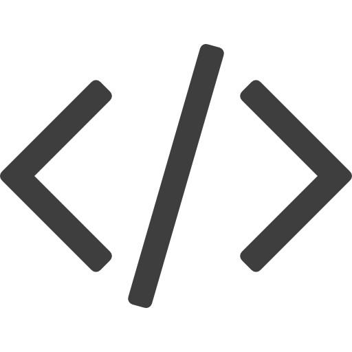

Witaj na stronie poświęconej tworzeniu stron internetowych stworzonej za pomocą języków HTML5, oraz CSS3!
Na tworzenie aplikacji składają się dwie dziedziny: Front-end, oraz Back-end:
Ta pierwsza zarządza strukturą, oraz wyglądem aplikacji internetowej.
Front-end'em określa się technologie uruchamiane bezpośrednio w przeglądarce internetowej użytkownika.
Jest on składową języków takich jak między innymi HTML, CSS, oraz JavaScript.
Witrynę napisaną wyłącznie za pomocą języków Front-end'owych określa się mianem strony internetowej.
Jeśli skorzysta się dodatkowo z języków Back-end'owych strona staję się już aplikacją internetową.
Ta druga natomiast zarządza tym, czego uzytkownik nie widzi gołym okiem, jest to całe "zaplecze techniczne" aplikacji internetowej.
Back-end'em określa się skrypty uruchamiane po stronie serwera.
To właśnie serwer dzięki językom Back-end'owym przetwarza dane, zapisuje hasła użytkowników oraz wykonuje różnego rodzaju obliczenia.
Składają się na niego języki takie jak na przykład PHP, Ruby on Rails, czy Node.js.

Jeśli od zawsze marzyłeś o stworzeniu własnej strony internetowej to dobrze trafiłeś; jest to miejsce stworzone specjalnie dla Ciebie.
Przejdź do sekcji nauki, by poznać tajniki kodowania, lub zjedź niżej, by dowiedzieć się z czym to się je.
Przejdź do sekcji nauki, by poznać tajniki kodowania, lub zjedź niżej, by dowiedzieć się z czym to się je.
